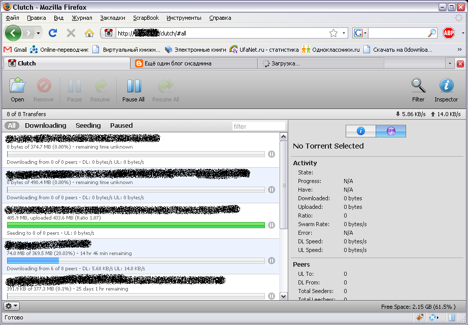

В предыдущей статье я описал настройку торрент-клиента transmission-daemon, в этой статье я опишу как я настраивал веб-интерфейс к transmission-daemon.
Первым делом устанавливаем веб-сервер lighttpd, php и php-расширение json.
# apt-get install lighttpd php5-cgi php5-json
Включаем модуль fastcgi веб-сервера lighttpd:
# lighty-enable-mod fastcgi
Заменяем в конфигурации модуля /etc/lighttpd/conf-enabled/10-fastcgi.conf интерпретатор PHP4 на PHP5:
fastcgi.server = (
".php" =>
(
(
"bin-path" => "/usr/bin/php5-cgi",
"socket" => "/tmp/php.socket",
"max-procs" => 2,
"idle-timeout" => 20,
"bin-environment" =>
(
"PHP_FCGI_CHILDREN" => "4",
"PHP_FCGI_MAX_REQUESTS" => "10000"
),
"bin-copy-environment" =>
(
"PATH",
"SHELL",
"USER"
),
"broken-scriptfilename" => "enable",
"check-local" => "disable"
)
)
)
Перезапускаем веб-сервер:
# /etc/init.d/lighttpd restart
При перезапуске сервер ругается, что расширение json уже загружено!
Комментируем строчку, отвечающую за загрузку расширения json в файле /etc/php5/cgi/php.ini:
;extensions=json.so
Снова перезапускаем веб-сервер:
# /etc/init.d/lighttpd restart
Переходим в каталог /root, качаем дистрибутив Clutch:
# cd /root/ # wget http://clutchbt.com/Files/Clutch-0.4.tar.gz
Распаковываем дистрибутив:
# tar xzvf Clutch-0.4.tar.gz
Меняем владельца и группу на пользователя и группу, под которыми работает веб-сервер:
# chown -R www-data:www-data Clutch-0.4
Переходим в каталог, где хранится файл настройки сокета для связи с transmission-daemon:
# cd Clutch-0.4/remote/data/
Прописываем в файле socket полный путь к сокету transmission-daemon:
/tmp/transmission.socket
Переходим в каталог веб-сервера:
# cd /var/www/
Делаем линк на веб-интерфейс:
# ln -s clutch /root/Clutch-0.4
Пробуем зайти в браузере по адресу: http://localhost/clutch/
Видим, что веб-интерфейс открывается, но java-скрипты не работают.
Я потратил довольно много времени на проверки, всё ли я сделал правильно. Сделал страницу phpinfo.php с содержимым "" Попробовал в браузере открыть эту страницу: расшинения json и sockets были включены. Попробовал прикинуться веб-сервером с помощью команды su - www-data и проверить, имею ли я доступ к сокету transmission-daemon, имею ли я доступ на запись в каталог /root/Clutch-0.4/remote/data/.
Потом я решил проверить работоспособность самого веб-интерфейса Clutch с помощью расширения Firebug для Firefox увидел, что Firebug ругается на ошибку в одном из java-скриптов.
Я решил скачать самую свежую версию Clutch прямо из svn-репозитория проекта. Установил subversion:
# apt-get install subversion
Перешёл в каталог /root/ и скачал репозиторий:
# cd /root/ # svn co http://svn.recurser.com/transmission/trunk clutch
Заглянул в каталог /root/clutch и увидел, что туда скачался интерфейс cocoa для MacOSX, исходники веб-сервера lighttpd, и нужный мне web-интерфейс.
Скопировал нужный мне раздел с web-интерфейсом
# cp clutch/branches/rpc/web/ clutch-web
Далее опять поменял владельца:
# chown -R www-data:www-data clutch-web
Отредактировал файл clutch-web/remote/data/socket:
/tmp/transmission.socket
В каталоге /var/www удалил прежнюю ссылку, добавил новую:
# rm clutch # ln -d /root/clutch-web clutch
Попробовал зайти через веб-интерфейс по адресу http://localhost/clutch/ снова. И, о чудо, он наконец заработал.
Тарболл с веб-интерфейсом можно скачать здесь: clutch-web.tgz
Осталось защитить веб-интерфейс паролем, чтобы разные злобные буратины не хозяйничали на моём веб-интерфейсе.
Подключаем к веб-серверу модуль auth:
# lighty-enable-mod auth
В конфигурации модуля /etc/lighttpd/conf-enabled/10-auth.conf прописываем:
auth.backend = "htdigest"
auth.backend.htdigest.userfile = "/etc/lighttpd/htdigest"
auth.require = (
"/clutch" =>
(
"method" => "digest",
"realm" => "Clutch",
"require" => "user=admin"
)
)
И с помощью скрипта lightdigest.sh, взятого с сайта lighttpd, устанавливаем пароль для пользователя admin и рилма Clutch:
# lightdigest.sh -u admin -p password -r Clutch
Скрипт для генерирования файла htdigest можно взять здесь: lightdigest.sh
Ну вот, пожалуй, и всё!
Дополнение от 8 октября 2009 года:
Transmission всех версий выше 1.22 имеет новый способ управления. Теперь для управления демоном используется не сокет-файл, а HTTP-сервер, работающий по умолчанию на TCP-порту 9091. Сервер поддерживает digest-авторизацию, управление осуществляется с помощью какой-то разновидности протокола RPC. Также на этом HTTP-сервере имеется встроенный Web-клиент для управления Transission, старый знакомый Clutch, который доступен при подключении браузером к серверу. Никаких особых настроек не требуется, в squeeze демон снабжён init-сценарием для запуска.